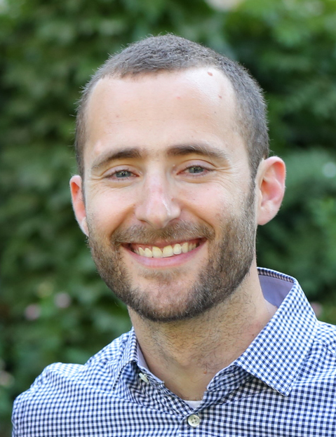

I am a Senior Lecturer (Assistant Professor) in the Technion's Faculty of Mathematics. My research focuses on applying various mathematical tools for the development and theoretical analysis of machine learning algorithms, with a focus on group equivariant learning and graph neural networks.
In the years 2018–2021 I was an Assistant Research Professor at Duke University, hosted by Prof. Ingrid Daubechies. In 2018 I completed my PhD at the Weizmann Institute under Prof. Yaron Lipman.
Email: nadavdym (at) technion.ac.il
Team
Current Members
| Tal Amir | Research Associate |
| Snir Hordan | PhD student |
| Yonatan Sverdlov | PhD student |
| Benjy Friedmann | PhD student |
| Matan Mizrachi | PhD student |
Former Members
| Eitan Rosen | Postdoc |
| Yakov Mishayev | MSc student |
| Yair Davidson | MSc student |
| Ravina Ravina | MSc student |
Selected Publications
-
Spectral Graph Neural Networks are Incomplete on Graphs with a Simple Spectrum
Snir Hordan and Nadav Dym.
NeurIPS 2025 (Spotlight) -
On the Expressive Power of Sparse Geometric MPNNs
Yonatan Sverdlov and Nadav Dym.
ICLR 2025 -
Low-Dimensional Invariant Embeddings for Universal Geometric Learning
Steven J. Gortler and Nadav Dym.
Foundations of Computational Mathematics 2024 -
On the Hölder Stability of Multiset and Graph Neural Networks
Yair Davidson and Nadav Dym.
ICLR 2025 (Oral) -
Neural Injective Functions for Multisets, Measures and Graphs via a Finite Witness Theorem
Tal Amir, Steven J. Gortler, Ilai Avni, Ravina Ravina and Nadav Dym.
NeurIPS 2023 (Spotlight) -
Linearly Converging Quasi Branch and Bound Algorithms for Global Rigid Registration
Nadav Dym and Shahar Ziv Kovalsky.
ICCV 2019 (Oral)
See all publications on my Google Scholar page.